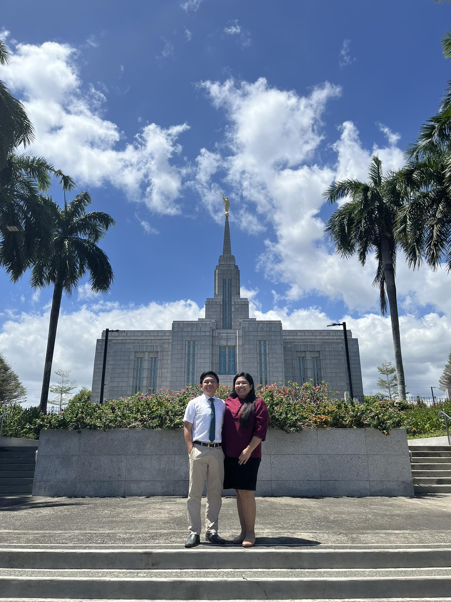

Raphael De Sosa | WDD130
Hello! My name is Raphael De Sosa and I am from Zamboanga city, Philippines. I love listening to music and also playing the drums. I also enjoy playing video games. I'm also a little sporty. I play basketball, soccer, the occasional table tennis at the chapel. I am the youngest. I have a brother and a sister. I served a mission at Philippines San Pablo Mission way back 2013-2015. I am currently a stake assistant clerk. And I am hoping to be able to finish my education and get a degree through this opportunity that the church has given. And that this will be an added skill and that I may be able to provide better for my family. I like computers and I am also very interested in what I am currently taking right now which is this course.